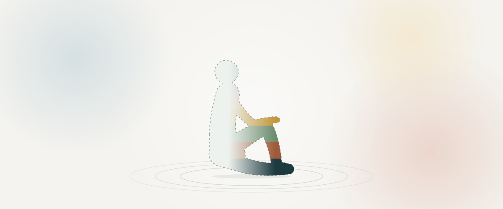

Minha Jornada · Parte II
O que fui encontrar
A chegada ao trabalho corporal, o ponto de ruptura e o que o corpo foi revelando ao longo das práticas.

Antes de chegar ao trabalho corporal, eu descreveria minha relação com o próprio corpo como uma convivência com um desconhecido. Apesar da minha sensibilidade, eu era invisível para mim mesma. Tinha bons reflexos, boa coordenação, facilidade para dançar desde que não precisasse seguir coreografias. Habitava meu corpo de forma intuitiva, mas ignorava sistematicamente suas demandas. Ignorar era o verbo que me definia.
Eu vivia sob o lema "faço o que precisa ser feito", independentemente das consequências para mim. Acreditava genuinamente que era forte e que suportava com naturalidade tudo que surgia. O que chamava de força era, na verdade, uma forma sofisticada de autonegligência.
O ponto de ruptura não foi dramático. Foi gradual e físico. Comecei a ter sintomas que não encontravam correspondência nos exames: de repente, não conseguia enxergar o rosto das pessoas com nitidez, não conseguia ler, perdia detalhes ao redor. Depois vieram padrões de luz e enxaquecas. À enxaqueca se seguiram outros sintomas que se revezavam de forma intermitente: taquicardias, vertigens, falta de ar, mal-estar. Os exames vinham normais ou com variações mínimas. O alívio, quando vinha, não durava.
Emocionalmente, eu estava envolvida em situações que também não queria ver. Meu relacionamento amoroso estava em crise. Meus pensamentos eram de alerta constante, um medo que exacerbava sensações de perda e tragédia que sequer existiam, exceto no aperto no peito e no reflexo de fuga. Em nenhum momento percebi o que o meu corpo estava dizendo. Nem percebia que havia um corpo para ouvir, pelo tanto que eu imergia no emocional sem nome.
Eu sabia que havia algo errado. Sabia que precisava de ajuda. Sabia, também, que havia traumas que deveriam existir e que não vinham à tona nas sessões de análise, nas terapias, nas tentativas frustradas de meditação. Os sintomas eram amenizados, mas a melhora era passageira. Sentimentos ignorados não desaparecem: se acumulam.
Cheguei ao trabalho corporal por acaso, porque estava em busca de algo e encontrei uma proposta que fez sentido. Havia abandonado consultórios pelo que me pediam: falar com almofadas, despertar conflitos do passado pela palavra. Eu estava fechada em mim e não havia lacunas por onde a palavra pudesse expressar o que eu vivia. A proposta de trabalhar o emocional através do corpo pareceu mais adequada a esse estado.
Inicialmente estava descrente, travada, desconfiada e insegura. Sentia vergonha do turbilhão de sentimentos que me habitava, o receio permanente de ser intensa, de perder o controle. O terapeuta me disse: "Apenas confia e se entrega ao processo." Se pudesse resumir aquele momento em uma palavra: esperança.
A primeira reação que me impactou veio durante um exercício físico. Despertou em mim uma sensação de lembrança que eu não sabia que existia, e eu me senti rejeitada, frágil, com medo. Chorei muito. No final do exercício, sentia-me leve e em paz com minha existência. Pensei: estou no lugar certo.
Ao longo das práticas, o que mais me surpreendeu foi aprender tanto sobre mim. Como pessoa autocrítica, acreditava que sabia tudo que havia para saber sobre quem eu era. Descobri que meu conhecimento era limitado ao que se apresentava na superfície. Quanto mais fundo a prática me levava, mais havia de mim para reconhecer. Descobri que sabia pouco do meu emocional, da minha mente e do meu corpo.
E, surpreendentemente, o corpo era a via mais direta para desvendar meus próprios segredos.
Antes
Parte I: O corpo que percebe antes. As percepções das enfermarias, o paladar, o coração, e o encontro com Reich.
Voltar à Parte I